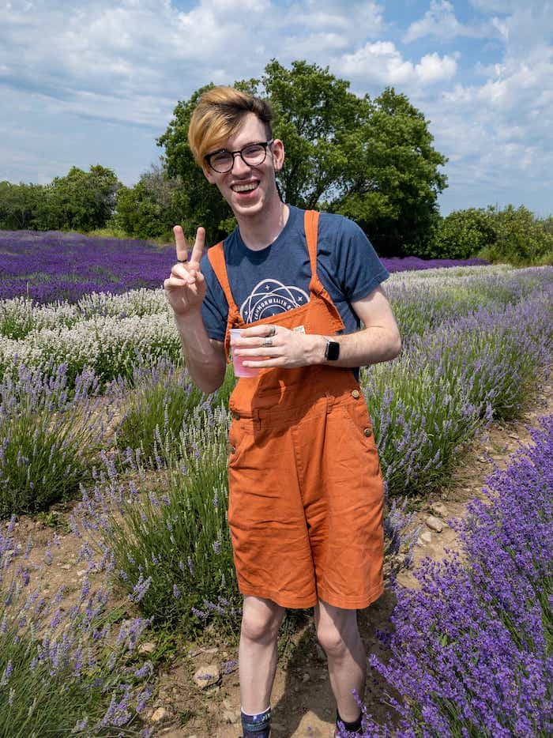

Quinn
Pollock
Projects
About Me
Github
Twitter
Letterboxd
dark mode: off
Menu
Hello, World
I'm Quinn Pollock
I'm a
Podcast enthusiast,
Pen & Paper aficionado,
ttRPG nerd,
and Musical Obsessed
Computer science student at queen’s university
